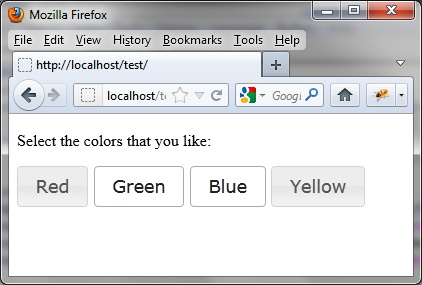
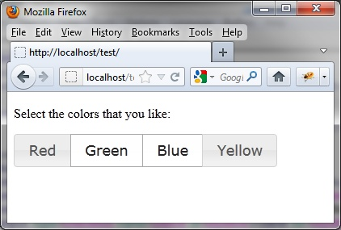

{% include JB/setup %}
{% raw %}
<div>
<div class="book" title="Checkboxes"><div class="book"><div class="book"><div class="book"><h1 class="title2"><a id="checkboxes" class="calibre1"></a>Checkboxes</h1></div></div></div><p class="calibre7">The appearance of the checkboxes is the same as radio buttons, but
    it is possible to select and deselect each checkbox independently (see
    <a class="ulink" href="ch05s06.html#checkboxes_with_two_buttons_selected" title="Figure 5-8. Checkboxes with two buttons selected">Figure 5-8</a>).</p><div class="book"><div class="figure"><a id="checkboxes_with_two_buttons_selected" class="firstname"></a><div class="book"><div class="book"><a id="I_mediaobject5_d1e4360" class="firstname"></a></div></div><p class="title4">Figure 5-8. Checkboxes with two buttons selected</p></div></div><div class="book" title="Displaying Checkboxes"><div class="book"><div class="book"><div class="book"><h2 class="title5"><a id="displaying_checkboxes" class="calibre1"></a>Displaying Checkboxes</h2></div></div></div><p class="calibre7">To display the checkboxes, change the <code class="literal">type</code> attribute of <code class="literal">&lt;input&gt;</code> elements, replacing <code class="literal">radio</code> with <code class="literal">checkbox</code>:</p><a id="I_programlisting5_d1e4382" class="firstname"></a><pre class="programlisting">&lt;!DOCTYPE html&gt;
&lt;script src = jquery.js&gt;&lt;/script&gt;
&lt;script src = jqueryui/js/jquery-ui-1.8.16.custom.min.js&gt;&lt;/script&gt;
&lt;link rel=stylesheet type=text/css
      href=jqueryui/css/smoothness/jquery-ui-1.8.16.custom.css /&gt;
&lt;p&gt;Select the colors that you like:&lt;/p&gt;
&lt;input type=checkbox name=red id=idred&gt;&lt;label for=idred&gt;Red&lt;/label&gt;&lt;/input&gt;
&lt;input type=checkbox name=green id=idgreen&gt;&lt;label for=idgreen&gt;Green&lt;/label&gt;&lt;/input&gt;
&lt;input type=checkbox name=blue id=idblue&gt;&lt;label for=idblue&gt;Blue&lt;/label&gt;&lt;/input&gt;
&lt;input type=checkbox name=yellow id=idyellow&gt;&lt;label for=idyellow&gt;Yellow&lt;/label&gt;&lt;/input&gt;
&lt;script&gt;
$("input").button ();
&lt;/script&gt;</pre></div><div class="book" title="Improving the Display with buttonset ()"><div class="book"><div class="book"><div class="book"><h2 class="title5"><a id="improving_the_display_with_buttonset" class="calibre1"></a>Improving the Display with buttonset ()</h2></div></div></div><p class="calibre7">We can also improve the display by combining checkboxes into a
      block:</p><a id="I_programlisting5_d1e4389" class="firstname"></a><pre class="programlisting">&lt;!DOCTYPE html&gt;
&lt;script src = jquery.js&gt;&lt;/script&gt;
&lt;script src = jqueryui/js/jquery-ui-1.8.16.custom.min.js&gt;&lt;/script&gt;
&lt;link rel=stylesheet type=text/css
      href=jqueryui/css/smoothness/jquery-ui-1.8.16.custom.css /&gt;
&lt;p&gt;Select the colors that you like:&lt;/p&gt;
&lt;div&gt;
  &lt;input type=checkbox name=red id=idred&gt;&lt;label for=idred&gt;Red&lt;/label&gt;&lt;/input&gt;
  &lt;input type=checkbox name=green id=idgreen&gt;&lt;label for=idgreen&gt;Green&lt;/label&gt;&lt;/input&gt;
  &lt;input type=checkbox name=blue id=idblue&gt;&lt;label for=idblue&gt;Blue&lt;/label&gt;&lt;/input&gt;
  &lt;input type=checkbox name=yellow id=idyellow&gt;&lt;label for=idyellow&gt;Yellow&lt;/label&gt;&lt;/input&gt;
&lt;/div&gt;
&lt;script&gt;
$("input").button ();
$("div").buttonset ();
&lt;/script&gt;</pre><p class="calibre7">We observe here the same principle as the radio buttons. This is
      jQuery UI, which manages the buttons differently due to <code class="literal">type</code> attributes of <code class="literal">&lt;input&gt;</code> elements. The display is
      different, but the behavior is the same (<a class="ulink" href="ch05s06.html#checkboxes_in_a_block" title="Figure 5-9. Checkboxes in a block">Figure 5-9</a>).</p><div class="book"><div class="figure"><a id="checkboxes_in_a_block" class="firstname"></a><div class="book"><div class="book"><a id="I_mediaobject5_d1e4404" class="firstname"></a></div></div><p class="title4">Figure 5-9. Checkboxes in a block</p></div></div></div></div></div>

{% endraw %}

